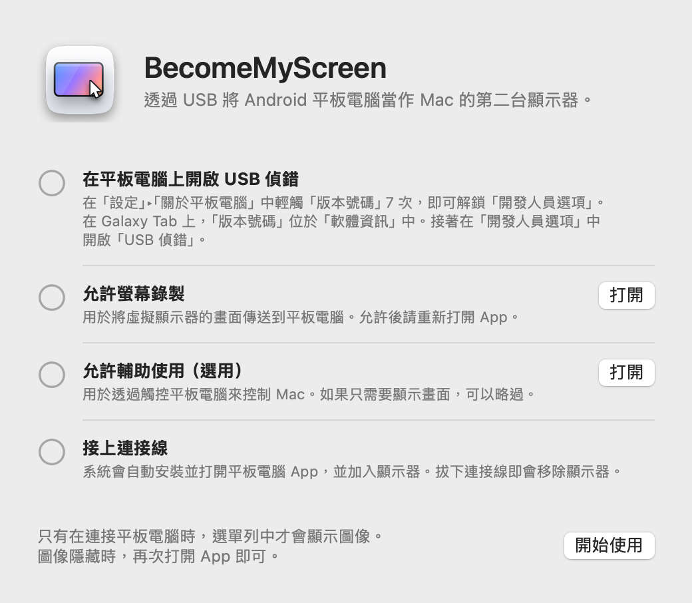
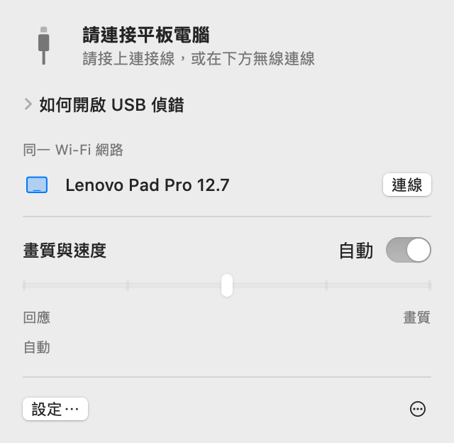
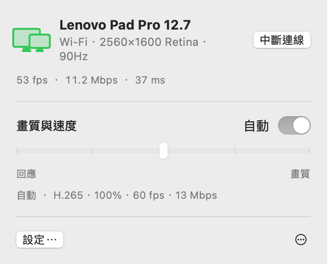
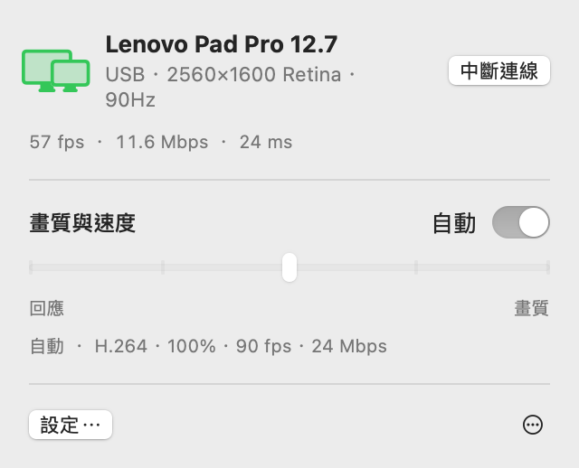
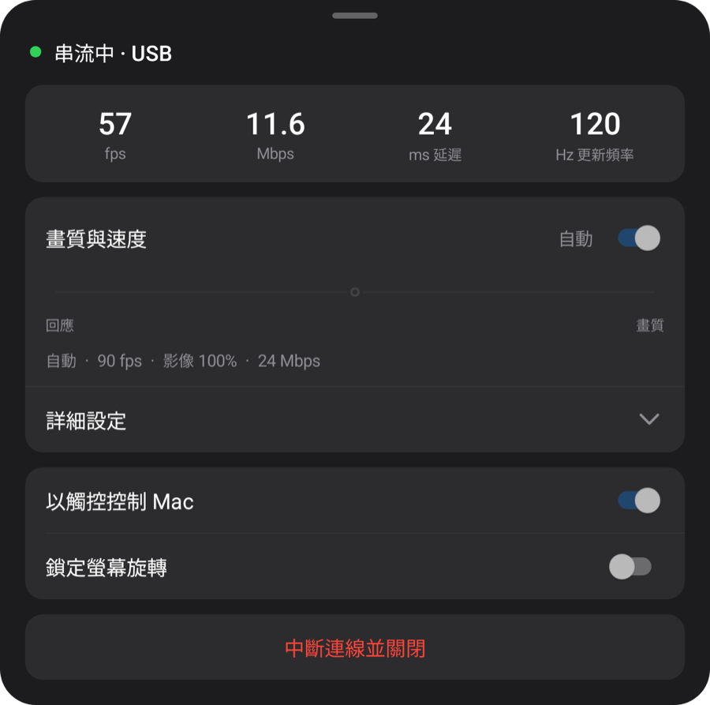
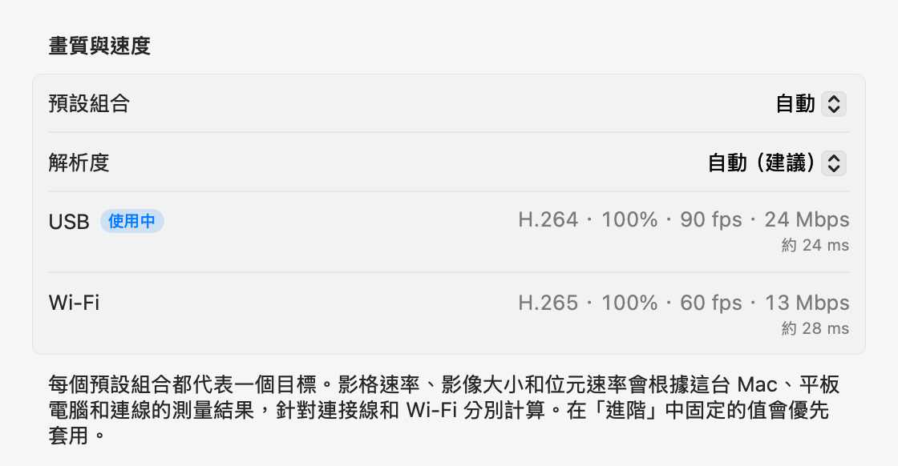

macOS + Windows 預覽版
讓平板顯示
你的電腦畫面。
Mac 的第二個螢幕，Windows 的鏡像預覽版。透過 USB 連接 Android 平板，電腦會自動安裝並開啟平板應用程式。
打開 zip 檔，將 App 移到「應用程式」檔案夾並打開。首次連線方式請參閱設定方式。
請在電腦上開啟此頁面，下載 Mac 或 Windows 應用程式。


以下設定、功能及效能測試皆以 Mac 版為準。Windows 請參閱上方預覽版指南。
設定方式
只需設定一次。之後接上連接線就會加入顯示器，在同一 Wi‑Fi 網路上則不需連接線也能連線。
-
安裝 Mac App
打開下載的 zip 檔，將 BecomeMyScreen 移到「應用程式」檔案夾並打開。允許螢幕錄製後，再打開 App 一次。
-
在平板電腦上開啟 USB 偵錯
在「設定」›「關於平板電腦」中輕觸「版本號碼」七次，即可解鎖「開發人員選項」。在 Galaxy Tab 上，「版本號碼」位於「軟體資訊」中。接著在「開發人員選項」中開啟「USB 偵錯」。
-
接上連接線
平板電腦詢問是否允許 USB 偵錯時，請勾選「一律允許透過這台電腦進行」並輕觸「允許」。Mac 會安裝並打開平板電腦 App，然後加入顯示器。不需要另外下載平板電腦 App。

速度
從 Mac 擷取畫面到平板電腦繪製出畫面所需的時間。使用 Lenovo Pad Pro 12.7 和 M4 Pro Mac 測量。
| 影像大小 | 60 fps | 120 fps |
|---|---|---|
| 100%2560×1600 | 20 ms | 24 ms |
| 75%1920×1200 | 14 ms | 19 ms |
| 50%1280×800 | 11 ms | 16 ms |
Apple 晶片中的硬體編碼器會將畫面壓縮為 H.264 並透過 USB 傳送，平板電腦的硬體解碼器則在每個影格到達時立即繪製。首次連線時，「自動」會測量解碼器能處理多少，並選擇不會落後的最高影格速率。在這台平板電腦上，它選擇了 90 fps。
測量方式：校正兩台裝置的時鐘差異後，我們測量了從 Mac 擷取影格到平板電腦繪製該影格之間的時間。
無線
透過 USB 連接過一次的平板電腦，也能在同一 Wi‑Fi 網路上無線使用。工作時拔下連接線，畫面會透過 Wi‑Fi 繼續顯示。
- 連線
- 在平板電腦上打開 App，它就會出現在 Mac 選單列的「同一 Wi‑Fi 網路」列表中。按一下「連線」，畫面就會出現。
- 拔下連接線
- 一秒內就會切換至 Wi‑Fi。虛擬顯示器和視窗配置都會維持不變，重新插上即會切回 USB。
- 安全性
- 無線連線用的金鑰只會透過 USB 連接線交換。金鑰驗證通過後才會建立連線，畫面和輸入全都以 AES-256-GCM 加密。
- 自動調節傳送速度
- 平板電腦會確認收到的每個影格，Mac 則會依落後的程度略過影格並調整位元速率。即使 Wi‑Fi 短暫變慢，延遲也不會累積。


| 連線 | 延遲 | 備註 |
|---|---|---|
| USB | 約 20–25 ms | 平板電腦的最高影格速率 |
| Wi‑Fi 5 GHz | 40–55 ms | 60 fps；位元速率會自動提高，最高可達畫質設定 |
| Wi‑Fi 2.4 GHz | 40–65 ms | 延遲偶爾會超過 100 ms，看起來可能像卡頓 |
使用 Lenovo Pad Pro 12.7，在 2560×1600 且內容持續變化的情況下測量。如果平板電腦使用 2.4 GHz Wi‑Fi，App 會建議切換至 5 GHz。
畫質與回應
從五個等級中選擇一個，或保留為「自動」。無論在 Mac 選單列或平板電腦選單中更改，兩邊都會同步改變。
| 預設組合 | 影格速率 | 影像大小 | 位元速率 |
|---|---|---|---|
| 自動 | 90 fps | 100% | 24 Mbps |
| 1最快回應 | 120 fps | 50% | 8 Mbps |
| 2快速回應 | 120 fps | 75% | 14 Mbps |
| 3平衡 | 90 fps | 100% | 24 Mbps |
| 4高畫質 | 90 fps | 100% | 33 Mbps |
| 5最佳畫質 | 60 fps | 100% | 39 Mbps |
使用 Lenovo Pad Pro 12.7（2560×1600、120 Hz）和 M4 Pro Mac，透過 USB 測量。每個預設組合都代表一個目標：在其他 Mac 或平板電腦上，以及透過 Wi‑Fi 連線時，預設組合會根據測量結果算出各自的數值。「自動」與「平衡」相同。
影像大小與 Mac 看到的解析度分開設定。較小的影像仍會填滿平板電腦螢幕，並相應減輕解碼器的負擔、降低延遲。
首次連線時，App 會用約 10 秒測量連接線、這台 Mac 的影像編碼器，以及平板電腦解碼器的各種模式；首次透過 Wi‑Fi 連線時，則會測量網路。每個預設組合都會依據這些數值，分別針對連接線和 Wi‑Fi 調整；在「進階」設定中，你還可以為每種連線固定任何數值。如果連接線速度太慢，也會提示你更換。



觸控
觸控平板電腦時，Mac 會將其視為滑鼠輸入。在 Mac 上允許輔助使用後即可開啟。
| 在平板電腦上 | 在 Mac 上 |
|---|---|
| 輕觸 | 按一下 |
| 拖曳 | 拖移 |
| 兩指拖曳 | 捲動 |
| 兩指輕觸 | 按右鍵 |
| 三指輕觸 | 開啟平板電腦選單 |
| 用觸控筆繪圖 | 以繪圖板輸入的形式傳至 Mac，包含壓力和傾斜角度 |
| 將觸控筆或滑鼠懸停在螢幕上方 | 移動指標。按住觸控筆按鈕並觸控即可按右鍵 |
會回到原處的指標
觸控平板電腦時，Mac 的指標會移到該位置。之後稍微移動滑鼠，指標就會回到觸控前的位置，不必再把它拖回主顯示器上正在進行的工作。你可以在設定中關閉此功能。
運作細節
- 選單列圖像
-
只有在連接平板電腦時才會顯示。圖像隱藏時，再次打開 App，它就會短暫出現並打開面板。
- 等待中
- 準備中
- 使用中
- 需要注意
- 打開平板電腦 App
- 接上連接線時，如果平板電腦 App 沒有執行，Mac 會將其打開；如果螢幕已關閉，也會將其喚醒。絕不會略過鎖定畫面。
- 更新
- Mac App 會檢查新版本，並在你選擇時自行更新。若其中含有較新的平板電腦 App，會在開始顯示前先透過連接線更新平板電腦。
- 直向
- 將平板電腦轉為直向，虛擬顯示器也會以直向重新建立。
- 更新頻率與螢幕逾時
- 串流期間會固定平板電腦的更新頻率，避免降至 60 Hz，螢幕也不會關閉。
- 連接線檢查
- 如果 USB 以低於 480 Mbps 的速度連接、傳輸速度一直低於 8 MB/s，或在三分鐘內中斷三次，App 會建議改用其他連接線或連接埠。
- 連線中斷時
- 如果連接線脫落，畫面會透過 Wi‑Fi 繼續。如果無法以無線方式繼續，虛擬顯示器會保留一小段時間；若平板電腦在這段時間內重新連線，視窗配置會維持原樣。
- 中斷連線與重新連線
- 在選單列中按一下「中斷連線」，即使連接線仍插著，平板電腦的畫面也會暫時擱置。按一下「重新連線」即可繼續。
- 平板電腦 App 自動關閉
- 當平板電腦完全沒有接上任何裝置（包括充電器）時，平板電腦 App 會在 10 秒後自動關閉。如果它可以改為等待無線連線，則會等待 2 分鐘。
系統需求
- Mac
- 搭載 Apple 晶片的 Mac，macOS 14 或以上版本
- Windows
- Windows 11 · Intel / AMD x64 · ARM64 · Windows 預覽版
- 平板電腦
- Android 8.0 或以上版本，且可開啟 USB 偵錯的裝置
- 連接線
- 支援資料傳輸的 USB 連接線。僅供充電的連接線無法連線。直接使用 Mac 本身的連接埠會比集線器更穩定。
- 無線
- Mac 和平板電腦必須位於同一 Wi‑Fi 網路上，建議使用 5 GHz。首次連線必須透過 USB。
- Mac 權限
- 螢幕錄製。若要以觸控控制 Mac，另需輔助使用；若要無線使用，另需區域網路。
常見問題
Windows 預覽版
此預覽版會複製現有螢幕。在我們的 ARM64 Windows 測試環境中，驅動程式安裝遭到阻擋；遇到此問題請使用 ZIP。x64 實體電腦的延伸顯示功能仍未經驗證。 版本說明與已知限制
需要在平板電腦上安裝 App 嗎？
不需要。平板電腦 App 內建於 Mac App 中，因此接上連接線時，Mac 就會安裝並打開它。更新 Mac App 後，下次連線時平板電腦 App 也會一併更新。
可以透過 Wi‑Fi 使用嗎？
可以。透過 USB 連接一次後，之後就能在同一 Wi‑Fi 網路上無線連線。在平板電腦上打開 App，然後在 Mac 選單列中按一下「連線」，或直接在使用時拔下連接線即可。延遲比 USB 稍高（5 GHz 上為 40–55 ms），而 2.4 GHz Wi‑Fi 偶爾會卡頓，因此建議使用 5 GHz。
為什麼首次連線必須透過 USB？
因為無線連線用的金鑰只會透過連接線交換。如此一來，同一 Wi‑Fi 網路上的其他裝置就無法假冒你的平板電腦連線到你的 Mac。平板電腦 App 也會在這時安裝。
支援觸控筆壓力感應嗎？
支援。觸控筆的壓力和傾斜角度會以繪圖板輸入（壓力、傾斜和接近）的形式傳送至 macOS。由於使用的是 Android 的標準觸控筆輸入，S Pen 和 Lenovo 觸控筆都不需要額外的 SDK 或驅動程式。已使用 Lenovo Pad Pro 12.7 的觸控筆測試。
支援哪些平板電腦？
任何搭載 Android 8.0 或以上版本且可開啟 USB 偵錯的平板電腦。開發和測量是在 Lenovo Pad Pro 12.7（2944×1840、120 Hz）上進行，其他裝置尚未親自測試。虛擬顯示器的解析度和方向會在連線時配合平板電腦的螢幕。
為什麼沒有在 App Store 上架？
建立虛擬顯示器需要用到 macOS 的非公開功能，因此無法在 App Store 上架。不過，此 App 已使用 Apple 開發者憑證簽署並經 Apple 公證，下載後即可直接打開。
為什麼需要螢幕錄製和輔助使用權限？
螢幕錄製用於擷取虛擬顯示器並傳送到平板電腦，輔助使用會將平板電腦的觸控和觸控筆轉換為 Mac 輸入，區域網路則用於尋找同一 Wi‑Fi 網路上的平板電腦。畫面只會透過 USB 連接線或在你的 Wi‑Fi 網路內傳輸（無線時會加密），絕不會傳到網際網路。
連線一直中斷。
請改用其他支援資料傳輸的連接線，或不透過集線器，直接插入 Mac 上的連接埠。USB 連線速度慢或經常中斷時，App 會先通知你。短暫中斷後，虛擬顯示器會保留 15 秒，並從中斷處繼續。
如果平板電腦已鎖定呢？
Mac 會喚醒螢幕並打開 App，但絕不會略過鎖定。使用 PIN 碼或圖形解鎖後，就會立即連線。
可以在 Intel Mac 上使用嗎？
目前的版本僅適用於搭載 Apple 晶片的 Mac。